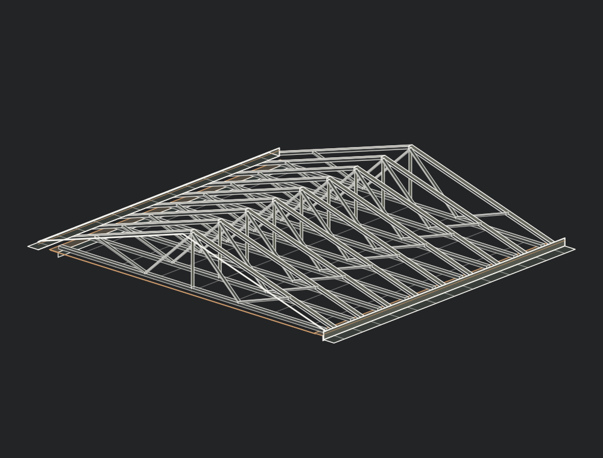

THE HOMEOWNER’S ROOF GUIDE
A roof works
in layers.
Get familiar with the parts before a conversation about your own property. The model is a simplified pitched-roof illustration, not a construction specification.
What sits beneath
the shingles?
The layers do different jobs.
Explore them one at a time.

Follow the edge.
The eave, gutter and downpipe are part of the roof’s wider water-management picture. This study draws attention to their relationship.
Concept illustration, not a simulation of a specific roof or its performance.

Ask what can be seen.
Ask what’s still unknown.
At the surface
Which areas show a change? How widespread is it? A visible mark or missing shingle is a starting point, not the whole diagnosis.
Below the surface
Some parts may not be visible during a first conversation. Ask what is known, what remains uncertain, and how that affects any proposed work.
Have something you want us to look at?
You don’t need the roofing term. Tell us what you’ve noticed.
Request an inspection